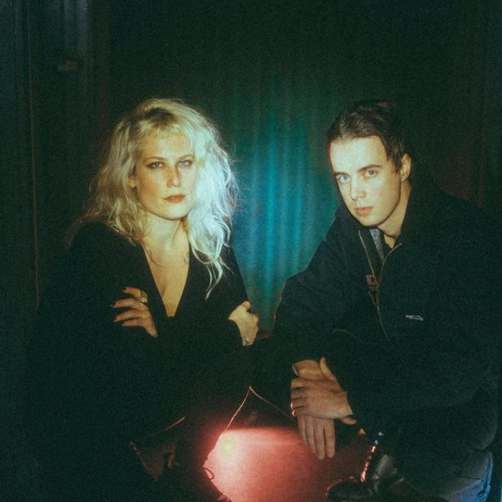

BOY HARSHER : DISTINCTIVE VISUAL AND MUSICAL AESTHETIC
13 March 2024

Boy Harsher, where to begin… an American musical duo formed in 2013, known for their unique blend of Electronic, Dark wave and Industrial music. The duo is made up of Jae Matthews and Augustus Muller.
Their sound is often described as dark, hypnotic and intense. They have released several albums and EPs that have been well received by fans of alternative and electronic music.
Boy Harsher first came to prominence with the release of their debut EP, “Lesser Man”, in 2014, which was closely followed by their first full-length album, “Yr Body Is Nothing”, in 2016.
heir music is often characterized by pulsating rhythms, haunting synthesizers and enigmatic vocals, creating a dark, immersive atmosphere.
In 2019, Boy Harsher released their second studio album, “Careful”, which received critical acclaim for its musical progression and captivating atmosphere. The duo is also known for their energetic and
mesmerizing live performances, where they manage to create an environment that captivates their audience.
Over the years, Boy Harsher has acquired a devoted fan base and continues to push the boundaries of experimental electronic music with their unique approach and distinctive visual aesthetic.
Here are ten of Boy Harsher’s best tracks, although the choice is subjective and depends on individual preferences: